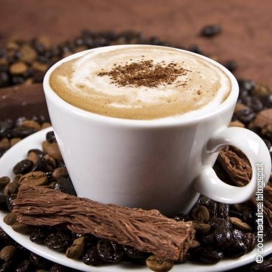

Con aroma a Café
Espresso

Esta variedad presenta un sabor intenso, profundo. La característica espuma brinda una textura particular. La preparación es especial a través de nuestro equipamiento italiano de alta gama.
Cappuccino
Café colombiano premium, con el agregado de cacao y canela, más la espuma característica y la leche que forman las tres capas esenciales de esta especialidad.
Machiatto

También conocido como "café español", uno de los favoritos de la casa por su mezcla entre el famoso "cortado" y el espresso de café colombiano premium.